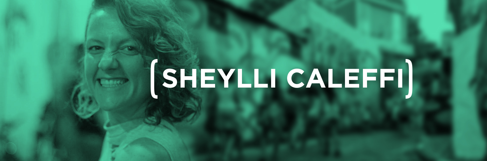
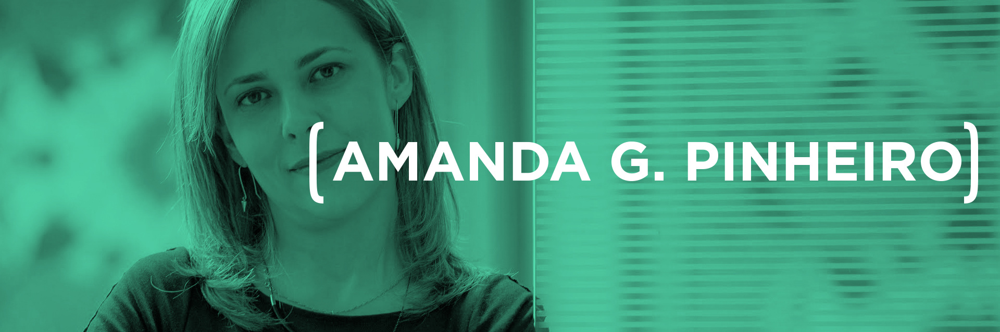

Future Leaders
[INSCRIÇÕES ENCERRADAS.]
A UPWIT(Unlocking the Power of Women in Technology) estimula a participação feminina na área de tecnologia por meio da criação de experiências. No encontro #FutureLeaders, três painelistas abordam o tema da liderança sob diferentes perspectivas: do mercado de tecnologia; do empreendedorismo e da área de coaching e desenvolvimento de pessoas. O workshop também terá uma dinâmica que irá ajudar as participantes a identificarem seus perfis de liderança.
[LINE-UP]
- 18h30 - 19h: Recepção
- 19h - 19h10: Check-in (momento quebra-gelo)
- 19h10 - 19h40: Dinâmica (você é líder?)
- 19h40 - 20h: Intervalo (drinks, networking & have fun)
- 20h - 21h30: Fishbowl com as painelistas
- 21h30 - 21h45: Check-out (ligando os pontos)
- 21h45 - 22h: Happy Hour
[50% TRANSPIRAÇÃO 50% INSPIRAÇÃO]
A cada encontro, a UPWIT conduz a discussão de um tema por meio das percepções de três convidadas e da promoção de uma experiência. Os painéis são dinâmicos e interativos, enquanto a parte prática propõe que as participantes se envolvam ativamente com o tema debatido. Esses encontros geram insights coletivos que permitem um entendimento maior dos desafios das mulheres na área de tecnologia.
[PARTE TRANSPIRAÇÃO]
Você é líder?
As vezes achamos que somos líderes, mas não temos certeza ou segurança para afirmar. Faremos algumas atividades que nos ajudarão a responder essa questão.
"Só vale a pena se for para ser inesquecível!" - Sheylli Caleffi
Sheylli Caleffi é diretora artística e media training. Ao longo dos últimos anos, tem ajudado muitas pessoas a falar em público ou em frente às câmeras. Bacharel em Artes Cênicas, já ministrou cursos de interpretação em universidades de teatro e cinema. São mais de 50 espetáculos teatrais e 300 eventos corporativos. Hoje é sócia da Epiphanea - somos todos artistas, do projeto de expressão autêntica Revelando quem eu Soul, e do movimento Empresa Livre. Sheylli também participa de várias iniciativas como LoveWorks, Futuros Femininos, Mindfvck, Baseado em Fatos Reais e Migraflix. Quando não sabe se grita ou gargalha, grava vídeos para seu canal no YouTube.
[PARTE INSPIRAÇÃO]
Painel em formato fishbowl (aquário)
A liderança de mulheres na área de tecnologia será o tema central dessa conversa que contará com a presença de três convidadas com experiências distintas:
Claudia Melo é uma aprendiz-tecnologista-pesquisadora, hoje pós-doc associada ao IME-USP, onde investiga empreendedorismo digital. Foi Global Head of Learning & Development na ThoughtWorks e CTO da ThoughtWorks América Latina. Doutora em Ciência da Computação pelo IME-USP, trabalhou em conjunto com a Norwegian University of Science and Technology. Nos últimos 16 anos, Claudia uniu-se a diferentes empresas brasileiras e multinacionais com o objetivo de desenvolver soluções digitais. Também facilitou o aprendizado de alunos de graduação e pós-graduação por 10 anos. É participante ativa da comunidade de tecnologia, com diversas publicações e palestras no Brasil, Estados Unidos, Europa, Escandinávia e Oriente Médio. Em 2015, recebeu o Prêmio Tese Destaque da USP.
Sthefane Torres é co-founder e atual CMO da empresa Moneto Instituição de Pagamentos. Co-founder e ex-CEO da TrustSign, liderou a área de Auditoria, Risco & Compliance e a fusão com a Site Blindado em 2014. Mestrado em Relações Internacionais (UNESP/UNICAMP/PUC-SP), MBA pela USP, extensão executiva pela FGV e Maryland University. Aluna Spotlight do Stanford Ignite 2015.
Amanda Gomes Pinheiro é coach especializada em liderança e idealizadora do treinamento Líderes para a Vida - programa que tem por objetivo transformar o poder de liderança individual e de alta performance em cada indivíduo, estimulando os participantes a atingirem uma vida mais plena. No mercado corporativo, construiu uma carreira de mais de 20 anos, chegando a assumir funções de comando em grandes empresas. Agora, como founder, está à frente da AMG Inovação, empresa voltada para treinamento e desenvolvimento de líderes.